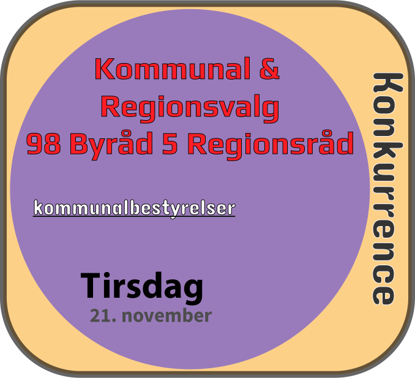

Facebook
Instragram
Twitter
-Find call to action!- Kommunal konkurrence
FORSIDE
valgvideo
VALGINFO
PARTIINFO
KONTAKT

Gaden har betydning
Brug din gaderet
Gaden i området
Et valg tæt på din gade
#fordig
Valgvideo
Portræt af unge i alderen 18 til 25 år
Turen til stemmeboksen
Brug info grafikken til at vælge din tur på valgdagen
Hjemmetid
Udetid
Valgtid
Udetid
Valgkortet
Du modtager valgkortet to uger før selve valgdagen. Tjek navn, sted og dato. Dygtige vi er til demokrati i Danmark og at det er noget være stolt af.
En person du kender
En persona skildret ud fra sammenstykket oplysninger og den Region de bor i
DATA_EFTERNAVN11
DATA_EFTERNAVN12
DATA_EFTERNAVN13
Region Hovedstaden
DATA_EFTERNAVN1
DATA_EFTERNAVN11
DATA_EFTERNAVN12
DATA_EFTERNAVN13
Region Midtjylland
DATA_EFTERNAVN1
DATA_EFTERNAVN11
DATA_EFTERNAVN12
DATA_EFTERNAVN13
Region Nordjylland
DATA_EFTERNAVN1
DATA_EFTERNAVN11
DATA_EFTERNAVN12
DATA_EFTERNAVN13
Region Syddanmark
DATA_EFTERNAVN1
DATA_EFTERNAVN11
DATA_EFTERNAVN12
DATA_EFTERNAVN13
Region Sjælland
DATA_EFTERNAVN1
Borgerservice i de to største kommuner
Adresse og link
DATA_GUIDE1
DATA_GUIDE2
DATA_GUIDE1
DATA_GUIDE2
De politiske partier
Lidt politik og link til partiernes hjemmeside
www.alternativet.dk/ (21.05.17) "Mod Generøsitet Gennemsigtighed Ydmyghed Humor Empati."
www.danskfolkeparti.dk/ (21.05.17) "På kommunalt basis skal vi være med til at bibeholde de over 60 årige i et aktivt liv med plads til individualisme."
www.enhedslisten.dk (21.05.17) "omkring os ændrer sig hele tiden. Som parti får vi nye erfaringer. Gennem diskussioner bliver vi klogere."
www.guldborgsundlisten.dk/ (21.05.17) "Det gode liv i Guldborgsund krydret med alle de gode historier kan være med til at skabe endnu mere vækst og udvikling i vores kommune. "
www.konservative.dk (21.05.17) "Familien er grundlaget for et velfungerende samfund."
www.kd.dk (21.05.17) "Kristendemokraterne er et politisk parti, der ønsker at præge samfundet ud fra det kristne livs- og menneskesyn."
www.liberalalliance.dk (21.05.17) "Liberal Alliance tror på dig Liberal Alliance sætter din frihed i højsædet."
www.sf.dk (21.05.17) "Socialistisk Folkeparti. Kontrol og minuttyranni har taget overhånd i den offentlige sektor."
www.radikale.dk (21.05.17) "Det Radikale Venstre tror på det frie og ansvarlige menneske, der virker i samhørighed med andre mennesker."
www.slesvigsk-parti.dk (21.05.17) "SP er det eneste regionale parti i Sønderjylland. Vi fokuserer fuldt ud på Sønderjylland."
www.socialdemokratiet.dk (21.05.17) "Ved det seneste regions- og kommunalvalg den 19. november 2013 fik Socialdemokratiet 29,5 procent af stemmerne, hvilket igen gør S til Danmarks største kommunale parti."
www.venstre.dk (21.05.17) "DET LIBERALE MENNESKESYN RETTEN TIL EGET LIVET LEVENDE FOLKESTYRE DET DANSKE FÆLLESSKAB KULTUR GIVER FÆLLESSKAB FOLKEKIRKE OG ELIGION."